Projects
Active Fin-Controlled Rocket
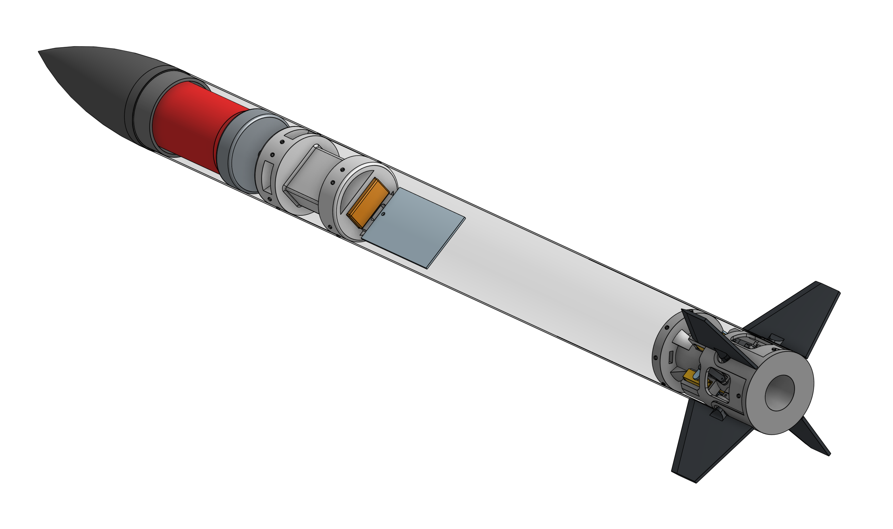
 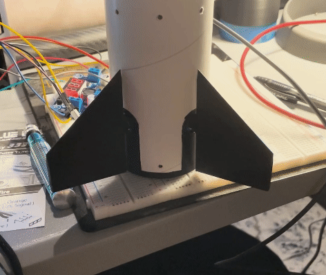
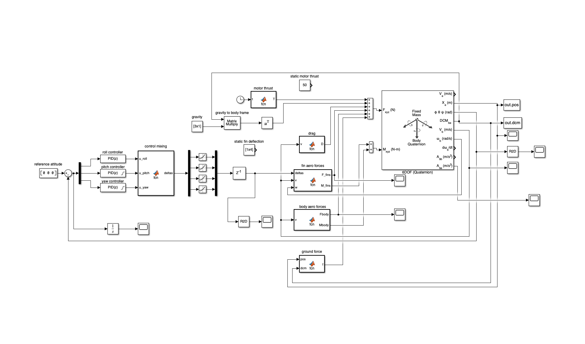
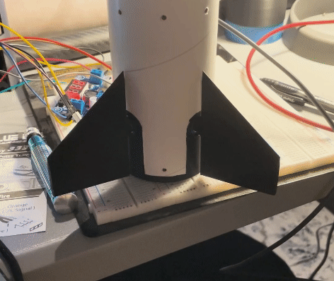
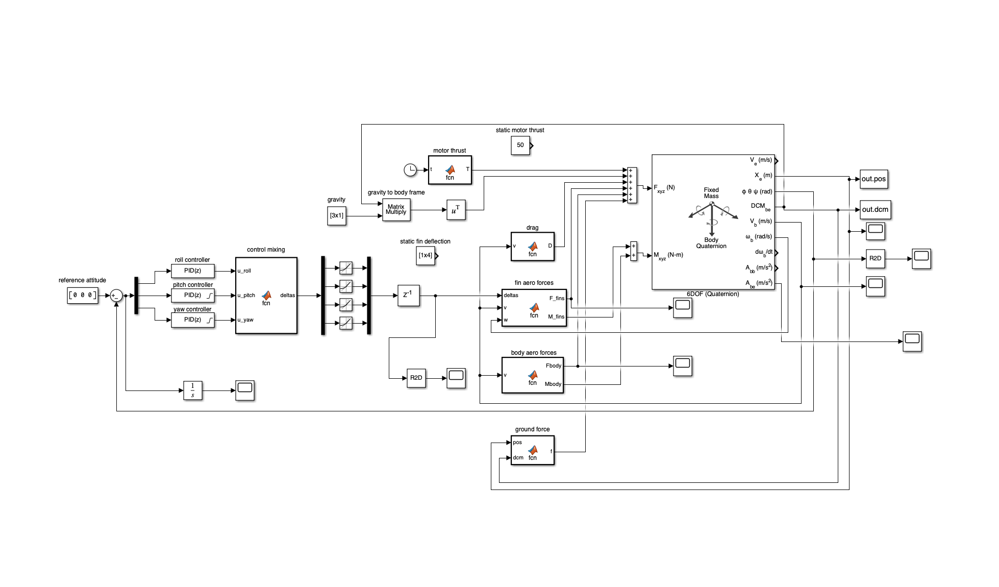
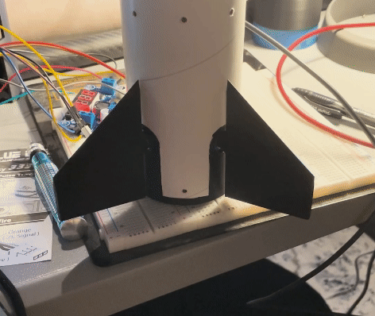
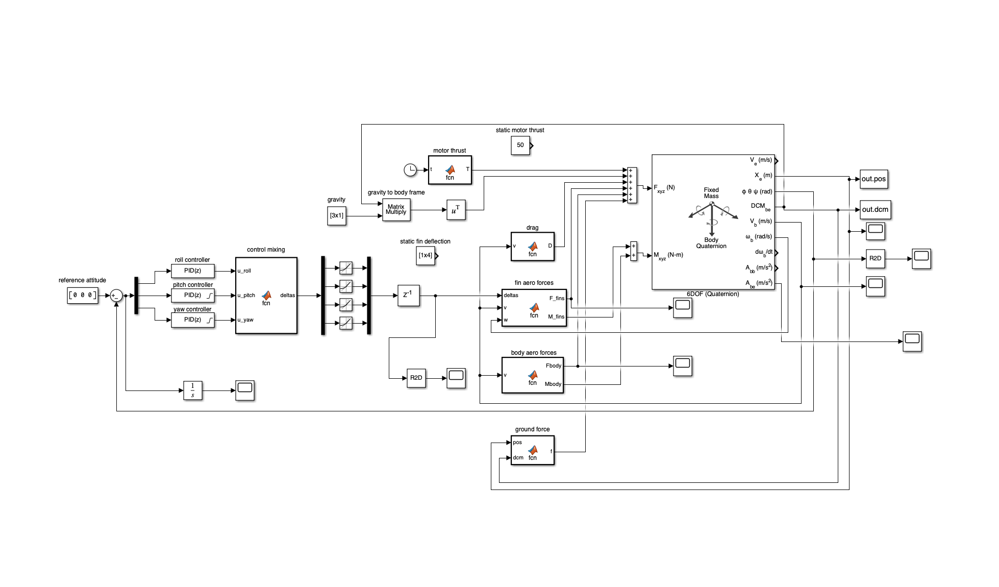
2D Compressible Euler Equation CFD Solver
 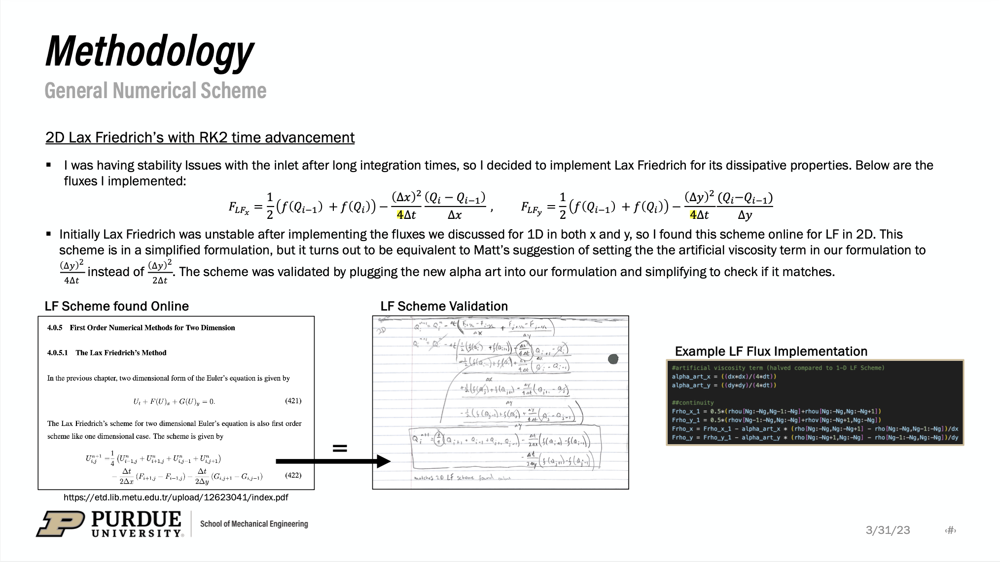
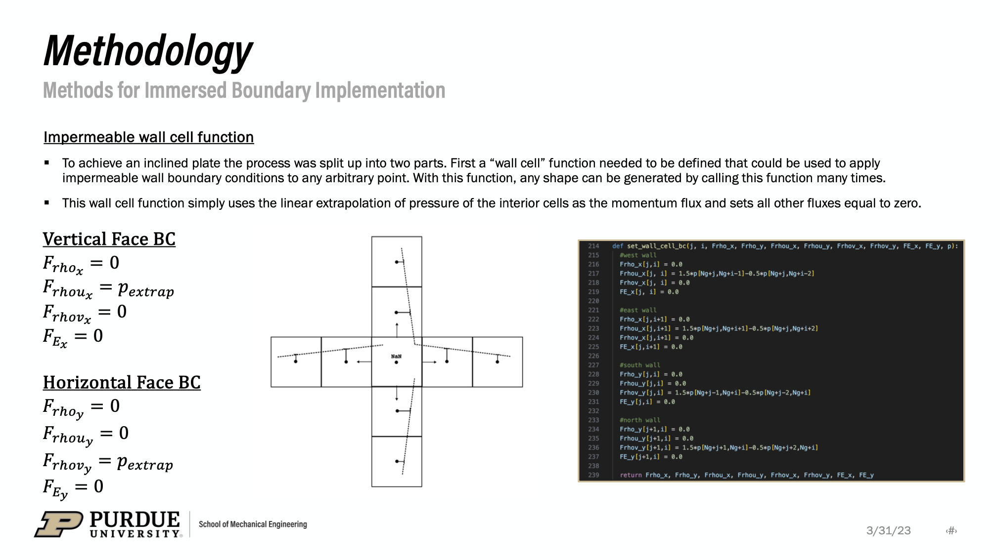
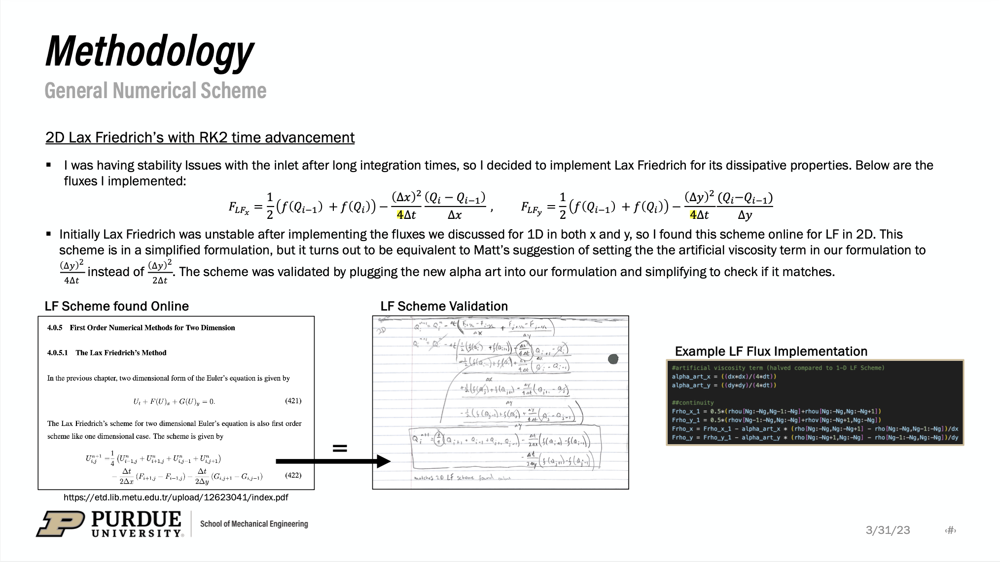
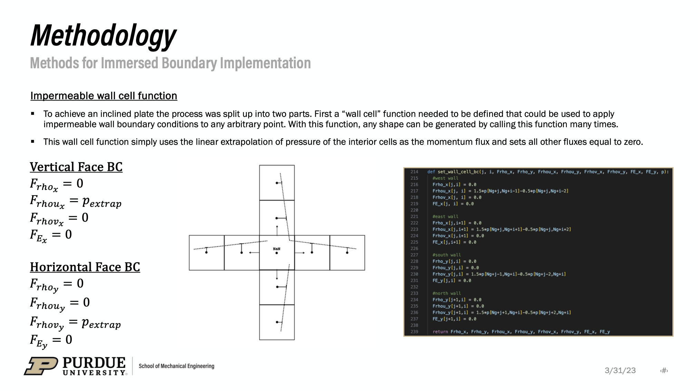
VEX Robotics


Contact & Links
Phone:
+1 (317)-670-0841
Email:
carlosm3@uw.edu
Address:
14133 Charity Chase Cir. Carmel, IN 46074